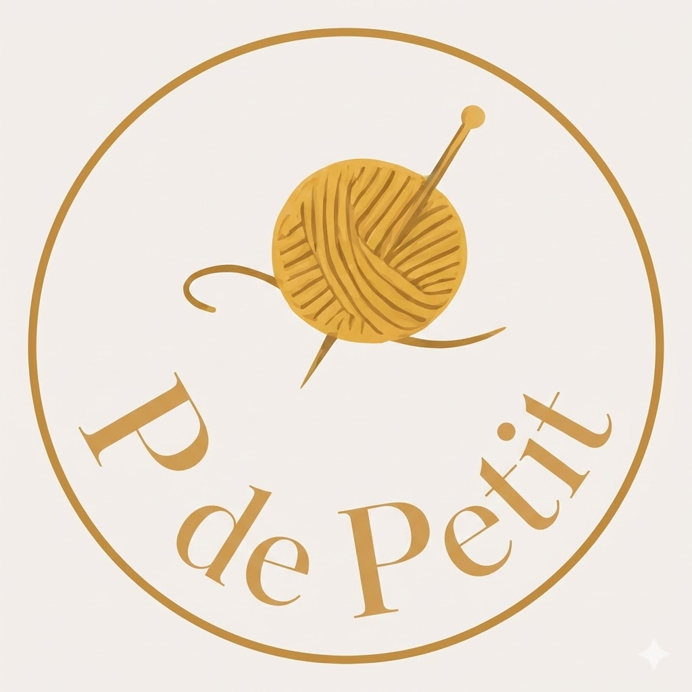

Elige
Mira el catálogo y guarda el nombre o la foto de la pieza que te gusta.

P de PetitCrochet artesanal
Modelos anatómicos para educación sanitaria, bolsos, bordados y detalles artesanales para celebraciones. Consulta tus ideas para regalos de cumpleaños, pareja, bodas o Navidad.


Ediciones pequeñas
Desde Valencia creo piezas artesanales de crochet y bordado: modelos para divulgación, regalos y proyectos personalizados.
Mira el catálogo y guarda el nombre o la foto de la pieza que te gusta.
Te confirmo disponibilidad, colores, precio y tiempos de preparación.
Te envío el enlace privado de Vinted por WhatsApp o email para que gestiones pago y envío allí.